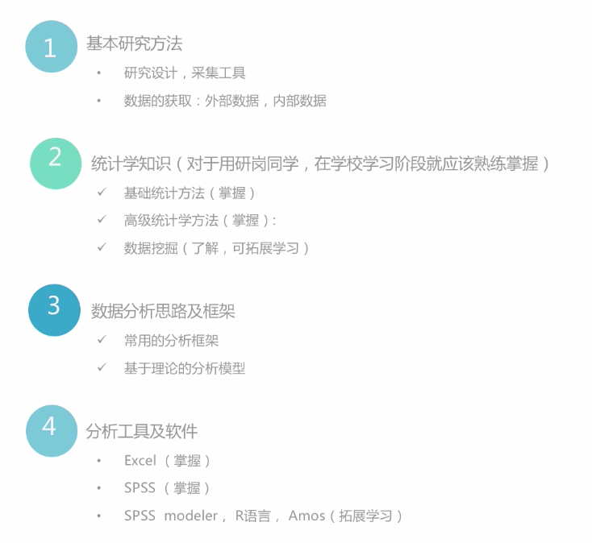

六、如何分析定量数据
A.定量的数据分析
1.工作中会用到的知识与技能


2.常用数据统计分析方法

3.SPSS常用功能

B.常用统计分析方法
1.基础统计常用分析

2.变量的属性及描述方式

3.相关性分析：研究不同变量间是否有关系，以及关系密切程度的一种常用的统计方法；适用于发现数据的关系；发现市场上决定性的或显著的属性，例如对于选择不同品牌的重要和有显著区别的属性
4.回归分析：

5.聚类分析：

6.因子分析：

7.差别分析

8.对应分析

9.多维尺度分析

10.路径分析

11.结构方程

12.应用场景

13.方法选择参考

C.常用的分析框架及工具
1.Kano模型
- 1）用于分析和规划质量与顾客满意度的工具
- 2）主要特点是：将质量分为三个不同需求层次，并通过简单的二维坐标轴提示了顾客满意度与不同质量需求层次的关系
- 3）基本型（必须有）、期望型（一元质量，优秀，但不是必须的）、兴奋型（魅力质量，出乎意料）需求
- 4）需求的分类和评估

- 5）数据获取方式


2.二维/多维模型
- 1）满意度分析

- 2）满意度镜像分析

- 3）品牌地位分析

- 4）市场机会分析

- 5）BCG矩阵

- 6）RFM模型

3.漏斗模型
- 1）用户转化路径分析

- 2）用户品牌漏斗转化模型

- 3）海盗指标：AARRR


七、混合式方法
A.混合研究
1.混合研究
- 1）指在研究中混合使用多种研究方法，将定量研究和定性研究的方法和技术混合或者结合在一起的一种研究
- 2）由于定量研究和定性研究各有其优势劣势，所以越来越多的研究人员在工作中将其结合使用
- 3）混合研究通常持实用主义理念，更关心什么是有效的，强调方法运用的灵活性
- 4）混合研究对研究人员的综合能力要求较高
2.混合研究的优势劣势

B.混合研究设计
1.混合研究过程

2.是否需要混合式方法


3.确定混合式方法的目的

4.进行研究设计：9种混合研究设计类型

5.时间顺序混合


6.先定量再定性：抽取用户进行定性访谈、焦点小组等，进行深入挖掘；在问卷中设置开放题目，收集定性数据
7.先定性再定量：通过定性研究进行完整细致的了解，再形成正式的定量问卷，设定其中的选项；定性研究的结果影响第二阶段定量研究的设计
8.定性定量并行：定性定量同时进行，互相作为补充，互相交叉论证
9.方法的侧重

10.数据分析：思路互换


11.数据分析：交叉互补，互相验证

C.混合研究案例


用户定位与需求分析
一、为什么要做用户定位
A.不同的用户定位会对产品有怎样的影响？
B.用户类型和产品差异
1.经典市场细分方法
- 1）地理细分：包括地形，气候，交通，城乡，行政区等
- 2）人口细分：包括年龄，性别 ，家庭人口，收入，教育程度，社会阶层，宗教信仰或种族等
- 3）心理细分：个性或生活方式等变量对用户细分
- 4）行为细分：对消费者行为的评估，然后进行细分
2.产品阶段定位
- 1）Demo阶段——种子用户
- 只有一个原型玩法
- 需要经验丰富
- 需要验证方向
- 2）核心版本阶段——忠实用户
- 核心玩法完整
- 辅助系统空白
- 需要待续验证系统慢慢丰富的效果
- 3）测试阶段——各类潜在用户
- 基本系统完整
- 细腻度不足
- 需要了解产品可以吸引哪些用户
- 4）正式上线——流失用户
- 完整的游戏
- 保证Dau（Daily Active User）
- 减少流失
- 5）稳定运营——付费用户
- 内容丰富的游戏
- 增加ARPU（Average Revenue Per User）
- 保证游戏生态
3.市场空间定位法
- 1）初级市场划分——游戏特征
- 2）次级市场划分——玩家结构
- 3）构建游戏内玩家群体结构模型
- 4）基于成功游戏市场情况建立数据分析基础
- 5）应用和分析思路
二、怎么做用户定位
A.用户研究的“用户”都有谁？
1.狭义的用户：产品的使用者

2.实际上我们考虑的用户，范围要更大

B.怎么做用户定位
1.对产品可支配资源的需求和定位
- 1）开发周期
- 快速开发：产品需要快速地完成大量的游戏内容的搭建

- 稳定开发：由铺量转向保质的开发过程

- 精细调整：需要对前期的开发内容进行精雕细琢，提升品质

- 2）版本内容
- 替代型资源的版本
- 正式资源的版本
- 3）设备支持
- 操作系统的问题

- 投放渠道的问题

- 设备支持：游戏内服务器互通的问题

C.用户方的定位
1.用户方的类型分类
- 1）年龄类型
- 2）性别类型
- 3）游戏背景类型
- 4）留存类型
- 5）付费类型
- 6）社交类型
- 7）传播类型
2.留存方面

3.付费类型

4.用户的使用场景

5.用户的使用频次

三、产品方的需求挖掘
A.产品方用户是怎么提需求的
1.发散型需求
- 1）通常看起来简单
- 2）通常含有关键词“怎么样”“测一下”“看一看”
- 3）通常是个别有洞天的“小”内容：“新玩法”“新版本”“新功能”“新界面”
- 4）内容上：无限可能
- 5）规模上：不明确
- 6）落地要求：模糊
- 7）研究方法：越多越好？
- 8）应对方法：逐一帮助产品方明确自己的需求

2.定向型需求
- 1）内容比较具体，针对确定问题
- 2）通常含有具体对象，比如“xx界面”“留存”“流失”
- 3）一般带有很多定语，比如“近期”“渠道测试”
- 4）内容上：比较明确
- 5）规模上：基本确定
- 6）落地要求：清晰
- 7）研究方法：一定范围
- 8）与发散类需求的差别：

3.隐含的需求
- 1）你更需要知道的是“HOW”，通常是产品方不会明说的，需要用研同学自动补全
- 2）通常跟美术、音效等“审美”体验相关
- 审美方面的感觉通常不是一个结果就能让产品方心服口服的
- 原因的解释和说明更有价值也更容易理解
- 3）通常是对具体元素的需求
- 一张图片的感觉不对，不一定是这张图片整体都不对
- 可能只是当中某个元素带来的感觉不对
- 如果只是按照字面的需求来理解给一个Yes or No的结果，美术的人也不知道该怎么改
- 4）是怎么做的强指引？
- 应该修改哪些元素？
- 应该朝着什么方向修改？
B .挖掘需求要做的准备
1.理解需求提出的背景
- 1）想要满足的人群
- 2）需要教学的内容
- 3）参考的竞品
- 4）希望达到的效果
- 5）担心的内容
2.储备相关信息
- 1）熟悉竞品内容
- 2）拓展相关业务
- 3）思考这些设计背后的原因
3.需求沟通
- 1）用户类型的假设
- 2）对设计目的的认识
- 3）对产品效果的认识
C.挖掘需求是循序渐进的
1.挖掘需求不是一次性的
- 互联网行业瞬息万变：常聊聊
- 产品主动：需求变化
- 用户主动：多跟产品聊聊，也许自己理解错误了呢
2.如何螺旋式挖掘需求

- 1）沟通技巧

- 2）沟通礼仪：预约和确认沟通时间；当面沟通>电话沟通>通讯工具沟通；控制表达欲，多倾听少打断；不卑不亢
- 3）需求沟通核心：

- 4）沟通方向

- 5）勇于表达；先想后说；直截了当；观点明确
- 6）理据结合；寻求反馈；适度冲突；合理取舍；多次沟通
- 7）有自己的观点
- 观点要清晰，切忌边想边说、边说边找观点
- 如果观点清晰，却不知道怎么准确表达 ，那么就尝试去描述事实
- 8）不同时表达三个以上观点：同时说三个观点等于没说
- 9）有踫撞才有进步，没有谁一定是对的，一切以产品成功为目的，用事实说话，多换位思考
- 10）与产品沟通流程

3.沟通内容整理

4.如何算需求目的理解到位了？

5.确认

四、用户方的需求挖掘
A.用户通常怎么提出需求
1.需求概念的模糊
- 1）在用户提出一个概念的时候，一定要小心
- 2）不能自己把这个概念，用业内通用的常识给补全了
- 3）一定要跟用户核实，他说的这个概念跟你理解的概念，是不是一样的
2.什么是体验类需求——用户间的分歧很大
- 1）体验类需求是指用户主观类感受的好与不好
- 2）单独把这个内容提出来，是因为很多体验类的需求是跟使用场景息息相关的
- 3）如果在需求挖掘的时候不考虑使用场景，那么最终的需求分析的结果是很有可能出现误导的
3.体验类需求特点——跟个人经历有关
B.挖掘用户方需求的准备
1.挖掘的套路
- 1）开场
- 自我介绍：简洁明确
- 目的介绍 ：给一个看起来简单的“小目标”，状态询问
- 2）预热（关系到需求挖掘的质量）
- 简单的了解对方
- 破冰，为深入交流做准备
- 3-5个题目的量
- 方式：


- 3）简单阐述

- 4）深入畅谈：了解原因
- 适当的回应


- 针对性的追问和拆分：提示思考后，有了一定信息可针对关键问题挖掘追问；良好的追问方式，是在整体感受方向确定后，对关注点拆分去问
- 必要的整理和复述——控制顺序的技巧：归纳总结，引导话题，让整个访谈更加自然；需求挖掘的提纲执行顺序可有一定不同：围绕核心，灵活应变

- 5）访谈执行——内容回馈
C.挖掘用户需求的过程
1.需求访谈提纲

2.用户方需求挖掘总结

五、需求的价值和取舍
A.用户提需求，如何分辨？
1.功能类的需求
- 合适的个性化需求
- 过度个性化的伪需求
2.价格类需求：消费意愿和价格的伪需求
3.内容类需求
4.用户提的需求如何分辨

B.眼花缭乱的各路需求，我们都能满足吗？
1.产品需求周期表

2.周期内需求要点

3.用研需求完成流程

4.理清需求
- 1）当面沟通，讨论
- 2）需要做：分解问题、形成初步方案、确定优先级…
- 3）暂时不做：参考以往研究的方案和报告…

5.制定计划

6.产品方无法满足的需求
- 1）竞品内部数据
- 2）潜在客户名单
- 3）违背客观中立的事实
C.如何研究各个需求的价值
1.需求对产品定位的价值
- 1）需求要点
- 2）效果估计
2.需求对产品形态的价值
- 1）内容选择
- 2）对内容选择的结果
3.需求对商业化的价值
- 1）商业化和商业模式

4.通用的需求价值评估方法
- 1）需求通用价值评估

- 2）产品/需求优先级

5.管理需求对用研的价值
- 1）管理需求和需求方
- 2）项目自主安排

- 3）抓住重大机会
- 全新的产品
- 重大功能
- 大家意见分歧明显且态度激烈
- 4）用研的自我意识
- 用研不仅是调研，是产品、运营、设计、市场的交叉岗位
- 从需求价值出发，思考产品、方法、资源的解决方案
- 不要仅关注方法和经验，关注业务和产品，多锻炼多思考与产品共同成长
测试评估提升用户体验
一、用户体验的度量
A.用户体验是什么
1.用户体验是什么？
- 1）用户在使用或者预计使用某产品、系统或服务时产生的主观感受或反应

2.用户体验的影响因素
- 1）品牌形象
- 2）外观
- 3）功能
- 4）系统性能
- 5）交互行为
- 6）交互系统（生态系统）
3.用户体验的本质：为用户体验而设计，让用户成为主角，以用户为中心进行设计


4.为用户体验而设计，就是坚持以用户为中心的设计

B.测试评估对用户体验的帮助
1.为什么要进行测试评估？
- 1）设计师与用户在知识和经验上的不对等：功能入口太深，用户第一次未必能找到
- 2）伟大的设计通过最少的干扰完成它的目的，不需要让用户注意到它有多巧妙

- 3）设计师并非真实的用户
- 4）设计师沉溺于设计，而忽略真实需求
2.最常用的测试评估方法
- 1）可用性测试：通过可用性测试界定出可用性问题并解决这些问题。从而让产品用起来更容易
- 2）启发式评估：是一种专家评审法，由几个评价者根据通用的可用性原则和经验来发现系统潜在的可用性问题
- 3）用户数据分析：通过数据分析发现现有产品的问题，针对性提出解决方案，以此来驱动产品优化设计
二、可用性测试的敏捷模式
A.什么是可用性测试
1.可用性（Usability）是交互式IT产品/系统的重要质量指标，指的是产品对用户来说有效、易学、高效、好记、少错和令人满意的程度，即用户能否用产品完成他的任务，效率如何，主观感受怎样，实际上是从用户角度所看到的产品质量，是产品竞争力的核心

2.可用性好的界面特征及益处

3.如何在产品设计中提升可用性？

4.可用性测试：故名思议是评估（测试）设计方案或者产品的可用性水平。更加具有操作性的定义，即“观察用户使用产品”。通过观察有代表性的用户，完成产品的典型任务，从而界定出可用性问题并解决的过程。可用性测试的终极目的是为了让我们的产品更好用
5.可用性测试的三个核心

6.可用性测试到底测什么


7.可用性问题
- 用户表现出来的挫败感
- 没有看到本来该看到的内容
- 用户说自己已经完成的任务但实际却未完成
- 导致任务偏离成功完成的操作
- 对内容的错误解读
8.可用性测试类型
- 1）形成式
- 主要通过出声思考方式，以发现各种可用性问题为主，通常会在产品设计的过程中反复使用
- 属于小样本、不能做定量对比
- 适用于互联网产品的：快速用户测试
- 2）总结式评价
- 主要检验目标达成率、所需时间、主观满意度
- 属于大样本的定量评估，可以做对比评估
- 发现问题为主：快捷、简易、紧密
9.什么时候适合做可用性测试

10.为什么尽早开始很难
- 产品还不能运行，让用户如何使用？
- 为什么让用户看到这么粗糙，必然要修改的东西？
- 上线后，通过后台日志分析收集大量用户数据不是更可靠么？
11.可用性测试解决什么问题
- 发现问题：产品体验上是否存在问题
- 检验实现：期望的设计目的是否能够达成？是否满足了用户的期望
- 理解用户：了解用户的行为习惯，了解用户的认知，找到某些问题的原因
- 产品评估：用户是否满意
B.如何进行可用性测试
1.可用性测试的基本流程

2.测试准备
- 1）确定测试方案
- 给用户找点事儿做：设计测试任务，确保测试任务反应了用户的实际目标，而不是你认为用户想做的事
- 确定负责人：列出探寻点列表

- 场景：一个知道要的类似故事的环境描述；用用户的语言；不要模棱两可；提供完成任务所需的细节信息
- 任务：有具体目标；可以通过步骤来达成目标；不能直接提供完成任务的步骤；不能给出答案

- 2）招募用户
- 招募概述：从描述开始，尝试描述你想要什么样的用户来参与测试；优先关注产品使用经验和行为；避免过度关注人口统计学数据；
- 招募细则：用户分组；用户细分及配比；人口学特征；产品使用经验及使用频率；所需态度及行为特征
- 招募问卷：基本信息；产品使用经验；观点及个性特征
- 需要多少个用户？通常五到八个人左右就好
- 到哪儿去找用户？内部人员、熟人朋友、用户池（User Pool）、现有用户、产品论坛
- 邀请通知用户：很正式的通知能让用户更积极
- 3）预实验，目的是测试用户测试本身，发现测试中的问题：
- 访谈指南里的台词和提示卡片里内容是否能够准确传达意思
- 用户的完成时间
- 确定任务的指示说明是否包含了暗示内容，特别注意非常容易完成的任务
3.测试执行
- 1）一张详细的list可以帮助你不遗漏必须要做的事
- 2）测试执行的完整流程

- 3）暖场

- 4）测试前访谈

- 5）测试执行


- 6）测试后访谈：专业的用户研究员主要采用发声思考法。但如果在操作过程中向用户提问会对操作产生较大影响，采访人员就应该避免中途介入，而在操作完成后使用回顾法补全信息

- 7）感谢

- 8）初始化


4.测试分析及测试报告
- 1）分析是为了找出马上要修复的问题
- 只讨论观察到的情况
- 重点是那些最重要的问题
- 2）作为组织者，你需要：
- 有白板的会议室
- 便利贴笔记
- 时间
- 存有录像的笔记本
- 3）如何分析结果
- 张贴并分类


- 整理不清晰的区域

- 给问题评出优先级


- 结果存档，并确定要修复它

C.可用性测试的10条注意事项
1.可用性测试的目的是为了发现问题，帮助改进产品设计，而不是为了评价这个产品
2.可以性测试前，做好一切准备工作：一张详细的list
3.测试移动应用时，让用户使用他熟悉的手机
4.告诉用户，我们测试的是产品，而不是用户，用户永远是对的
5.避免测试任务过于细分，任务间需要衔接
6.给用户尝试的机会，不要用户一遇到问题就马上提供帮助
7.测试过程中，注意访谈技巧：中立，不主动发表观点
8.用户使用含糊词汇时，记得追问
9.可用性测试是定性研究
10.可用性测试不是万能的
- 适合于发现设计方案、产品中存在哪些可用性问题，并帮助解决它
- 了解这个产品有多好，上市后有多少人会喜欢或者喜欢那个特殊设计点，或者有将来有多少比例的用户能顺利完成某个操作
三、启发式评估
A.什么是启发式评估
1.启发式评估是指安排一组评估人员检查界面，并判断其是否与公认的可用性原则相符“启发性”
2.启发式评估的两大要素

3.评估者要求

4.评估者的原则

5.Nielson启发式10原则

6.启发式评估的特征

7.启发式评估使用时机


B.如何进行启发式评估
1.确定评估目标及评估角色
- 1）确定评估目标

- 2）确定测试范围：不需要每次都对所有模块进行评估—整体、局部
- 3）向评估者提供必要的背景信息：用户、场景、任务、竞品
- 4）评估过程中的参与者

- 5） UR：组织并实施整个评估过程，与设计师一起对评估意见整理和分析
- 6）设计师：提出评估需求，如制定一系列流程任务；记录评估过程
- 7）评估人：在评估人员评估对象时，必须运用与目标用户相同的视角和目标：了解该产品的目标用户是谁，他们使用的原因/目标是什么。否则，可用性启发式评估就会缺乏用户核心，进而劳而无功
2.熟悉评估指标
- 1）三个部分

- 2）页面性指标

- 3）整体性指标

- 4）项目指标

3.进行评估测试
- 1）评估方式

- 2）评估需求文档

- 3）评估测试过程：以专家独立评估为例

- 4） UR填写表格：基本信息

- 5）专家填写表格：流程性/页面性指标

- 6）一致性指标

- 7）项目指标

4.分析并提交报告
- 1）可用性问题清单
- 2）严重性排序
- 3）确定解决方案
- 4）提交评估报告
C.尼尔森十大可用性原则
1.评估原则的作用是帮助评价者找出可用性问题，而不是限制仅仅找出与这些启发式评估矛盾的问题
2.十大可用性原则
- 1）状态可见：系统应该在适当的时间内做出适当的反馈，告知用户系统当前的状态

- 2）环境贴切原则：网页的一切表现和表述，应该尽可能贴近用户在的环境（年龄、学历、文化、时代背景），而不要使用第二世界的语言


- 3）用户控制和自由：用户经常在使用功能的时候发生误操作，这时需要一个非常明确的“紧急出口”来帮助它们从当前的情境中恢复过来，需要支持取消和重做

- 4）一致性原则：同一产品内，产品架构导航、功能名称、信息的视觉呈现、操作行为的交互方式等方面保持一致；产品与通用的业界标准一致

- 5）防错原则：通过页面的设计、重组或特别安排，防止用户出错
- 6）易取原则：将用户的记忆负荷减到最小，提供可选项让用户再确认信息

- 7）灵活高效原则：系统需要同时适用于经验丰富的和缺乏经验的用户

- 8）易扫原则：用户界面应该美观、精炼，不应该包含不相关或者不常用的信息。易扫，意味着突出重点，弱化和剔除无关信息
- 9）容错原则：用简单明确的语言解释错误信息，精确的指出问题的原因并提供有建设性的解决方案

- 10）人性化帮助原则：如果系统不使用文档是最好的，但是有必要提供帮助和文档，任何信息应容易去搜索，专注于用户的任务，列出具体的步骤来进行

四、数据分析驱动用户体验
A.用户体验优化设计
1.体验优化设计：在不改变产品性质的情况下（为什么人解决什么问题），对产品功能、结构、流程、页面等进行调整设计，使产品更好用易用，产生更大的用户价值
2.支付流程优化


3.根据什么进行体验优化设计

4.体验优化流程与思路


B.什么是数据分析
1.数据分析：让客观存在的数据产生价值，精细化推进业务发展

2.关注什么数据

3.关注哪些数据

4.数据背后的意义

5.数据的影响因素：用户素质、产品价值、运营策略、品牌
6.数据特点：业务价值、容易推导、比率、对比
7.首先制定核心指标

8.数据分析方法


C.案例分析
1.漏斗转化分析方法：漏斗模型

2.步骤